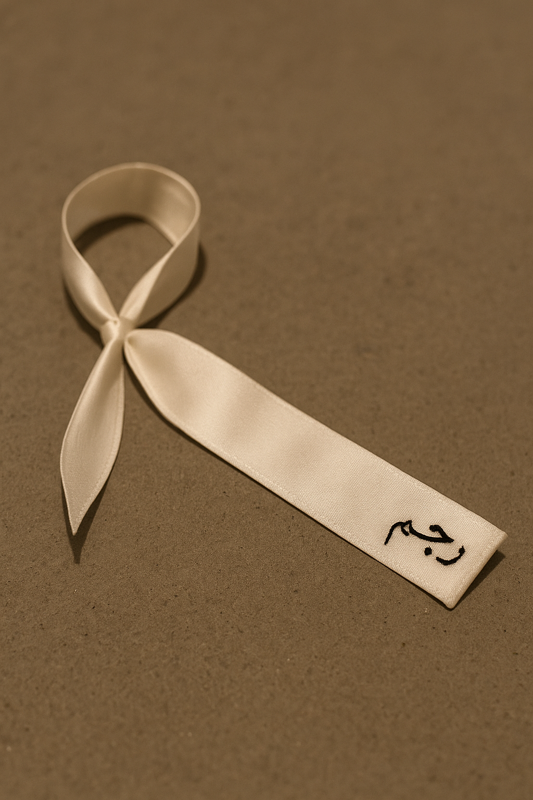
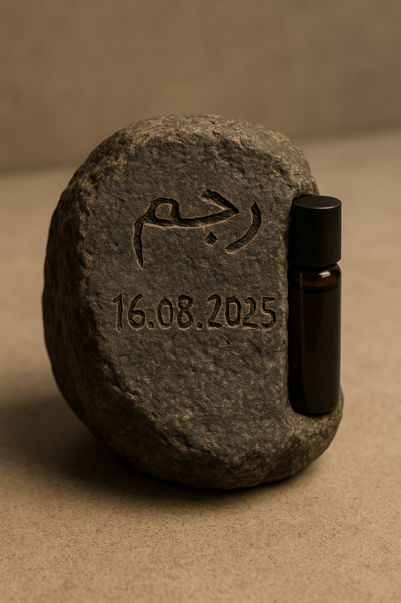

Rajm
Запланировано на август 2025
Экспликация
Rajm — это художественное исследование памяти, запаха и насилия. Проект переосмысливает аромат как посредника между личной травмой и коллективной памятью, вдохновлённый статистикой фемицида и работой с посттравматическим синдромом. Созданный запах — это нечто, что невозможно игнорировать, как сам опыт утраты, вызывающий ощущение мокрого, окровавленного камня.
Слово "rajm" в исламском праве обозначает казнь через побиение камнями — жест, где человеческое насилие принимает публичную форму. Проект интерпретирует это как символ непреходящей боли, передающейся через поколения и тела. Аромат, составленный из натуральных масел, сохраняется на хлопковой ленте, которую зритель завязывает на себе и вешает на стену, формируя коллективную инсталляцию травмы из невидимого, но ощущаемого.
Опираясь на исследования PTSD (APA, 2022), где 70% выживших сталкиваются с флешбеками от запахов, Rajm предлагает ритуал не исцеления, а честной встречи с болью. Зритель, вдыхая аромат, не имеет выбора, кроме как помнить и переживать.
Процесс
Ингредиенты и формула аромата
База: Ветивер (40%) и пачули (20%) — запах земли, мокрого камня; металлический акцент: герань (15%) и роза (5%) — имитация крови; фиксация: сандаловое и кедровое дерево (по 10%); молекулы: khusimol, patchoulol, citronellol, geraniol.
Тестирование
Проведено с 10 добровольцами, использовались молекулы геосмин и 1-octen-3-ol, отслеживалась эмоциональная реакция.
Ритуал
Хлопковая лента пропитывается глицерином, зритель завязывает её, вдыхает аромат, слушает аудио (дождь, шаги), затем вешает ленту на стену с гвоздями. Выдаётся коробочка с пробником аромата и камнем.
Таймлайн
Июль 10–12: подготовка масел; Июль 13–17: тестирование; Июль 18–27: мацерация; Август 2–13: производство 50 флаконов и лент; Август 14–15: установка.
Медиа
Фото флакона (50 мл, вставленного в камень): 
Процесс изготовления ленты и взаимодействия: 
Элемент экспозиции с гвоздями: 
Общий вид выставки: